Tyler W. A. Bradshaw
Neurobiology PhDDuke University
Objectives
- Courtland and Bradshaw, eLife (2021): Genetic disruption of WASHC4 drives endo-lysosomal dysfunction and cognitive-movement impairments in mice and humans.
- Resolving cellular space:
- Spatial Proteomics (subcellular fractionation)
- Proximity Proteomics (proximity labeling)
Proximity and Spatial Proteomics define protein localization
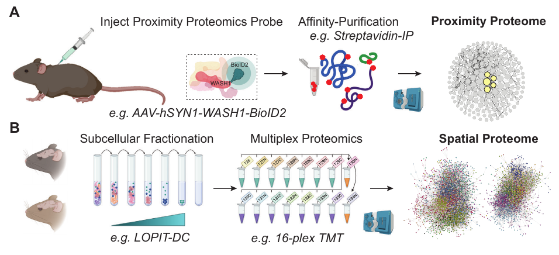Cells are compartmentalized
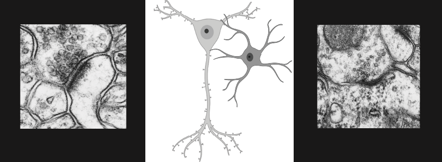Cells are compartmentalized into functionally-defined membrane and non-membrane bound organelles.
Proteomics: Identifying and Quantifying proteins in Complex Biological Preparations

Normalization → Protein Summarization → Statistical Testing
Spatial Proteomics: Resolving Subcellular Space by Fractionation
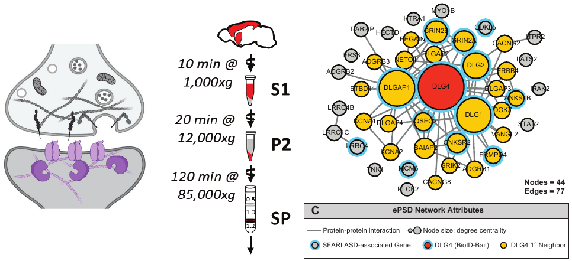Subcellular fractions enriched for specific biological fractions can be generated by centrifugation.
Assembling Protein Covariation Networks
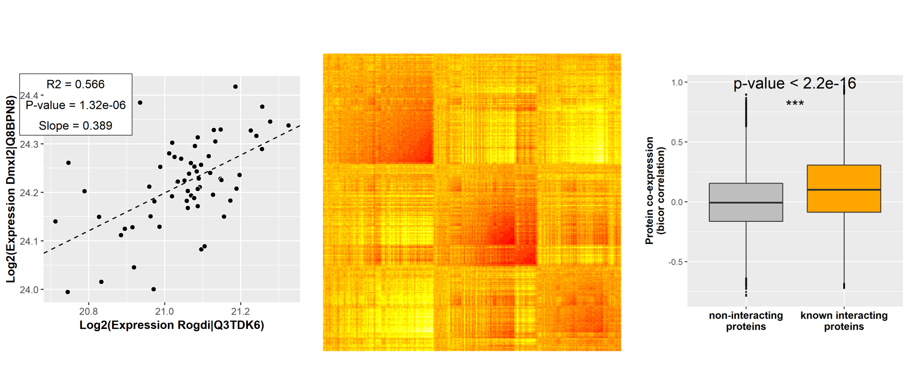The abundance of proteins that function and interact together tend to be highly correlated.
Proximity Proteomics: Resolving Subcellular Space by Proximity Labeling

Hard-to-reach subcellular compartments can be captured with BioID proximity proteomics.
Structure and Function in Biological Networks

Two Routes to Community Detection
Supervised: e.g. Support Vector Machine
(SVM)
Unsupervised: e.g. Leiden Algorithm
(Quality Optimization)
SWIP, a Strumpellin and WASH Interacting Protein (gene: WASHC4)

Autosomal recessive inheritance of the SWIP
SWIP is a Subunit of the Pentameric WASH Complex
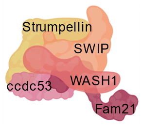Mutations in WASHC4 (SWIP) and WASHC5 (Strumpellin) are associated with intellectual disability and spastic paraplegia.
An Intracellular Trafficking Hub

The WASH complex acts upstream of Arp2/3 actin polymerization to direct endosome maturation.
Key Questions
- What is the function of WASHC4 in the brain?
- How does the P1019R mutation affect the neuronal proteome?
WASH in vivo BioID

Negative control: Soluble BioID2
The WASH Proximity Proteome
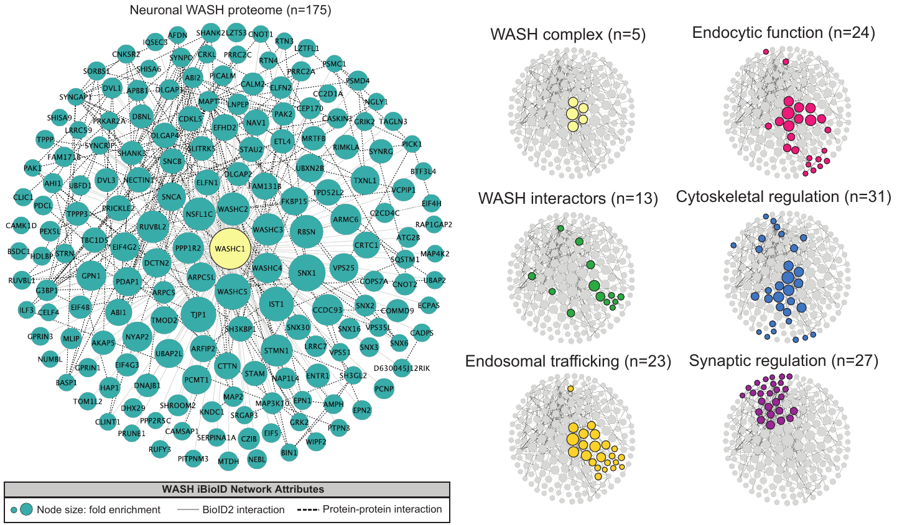Identification of the in vivo WASH proximity proteome supports its role in endosomal trafficking.
A WASHC4P1019R Mutant Mouse

The P1019R missense mutation results in decreased Strumpellin and WASH1 protein.
SWIP Spatial Proteomics
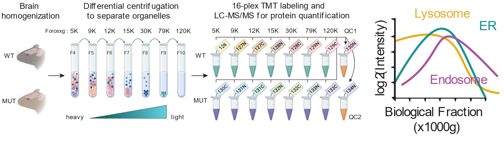Profiling protein abundance across seven biological fractions (BioFractions).
Challenges inherent in analyzing spatial proteomics
Community Detection
Network Enhancement + Leidenalg (Surprise)neten: Wang et al. 2018
leidenalg: Traag et al. 2019
Statistical Inference
Linear Mixed-Effects Modelslme4: Bates et al., 2021
t-statistic: Kuznetsova et al., 2017
Swip Spatial Proteome
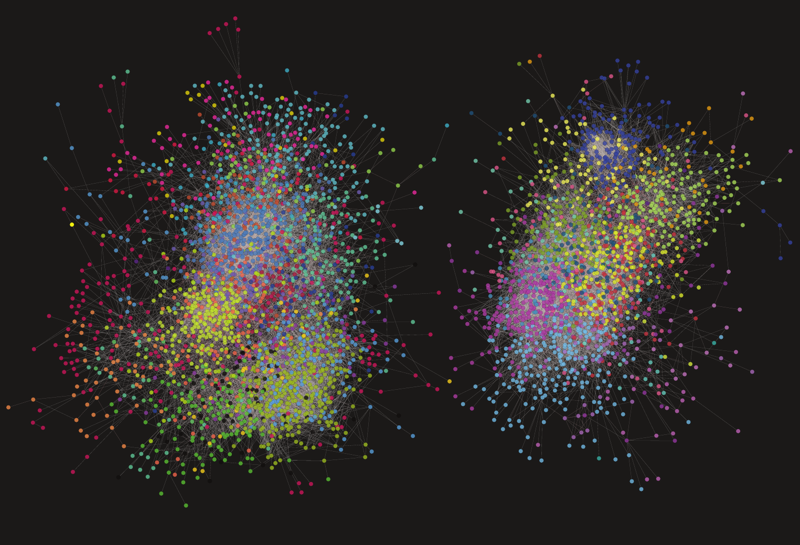(Nodes = 5,869 | Modules = 49)
Module-level Analysis Powers Biological Insight
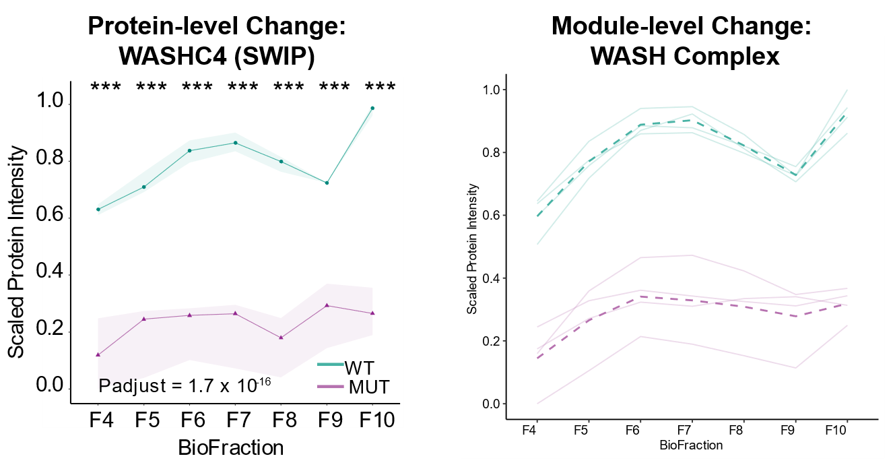
module-level model: log2(Abundance) ~ 0 + Condition + (1|Protein)
No change in six Compartments Identified by Spatial Proteomics
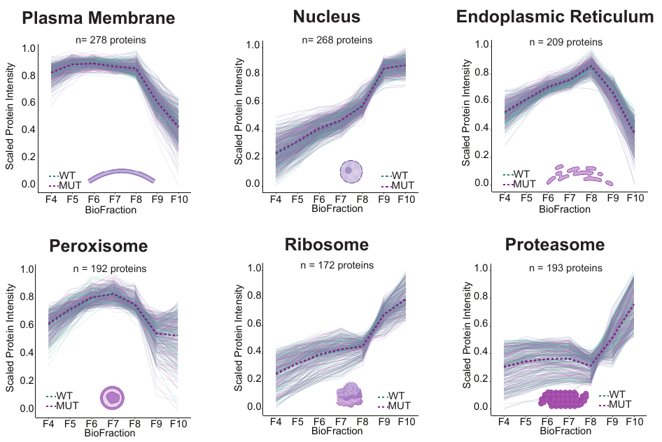Significant Disruption of an Endosomal Module Containing SWIP
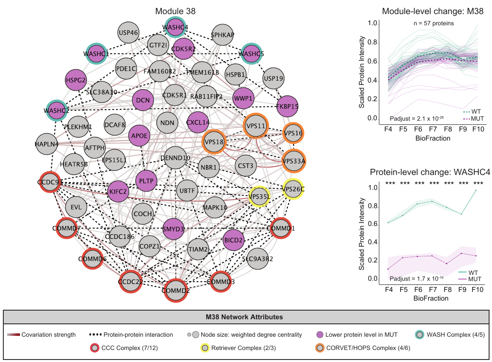WASHC4 Mutant Neurons Exhibit Altered Endosome Structures

Increased early endosome volume is consistent with WASH-complex loss-of-function.
Disruption of a Lysosomal Protein Network

Lipofuscin Accumulation in SWIPP1019R Mutant Brain
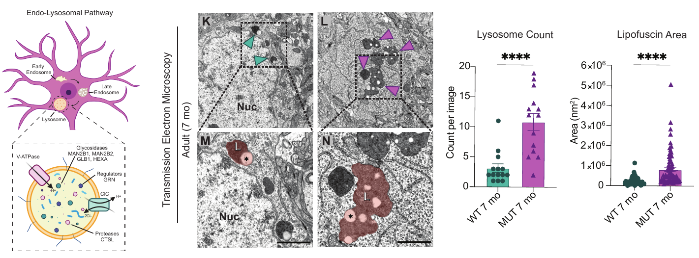Evidence of Neurodegeneration in SWIPP1019R Adult Motor Cortex
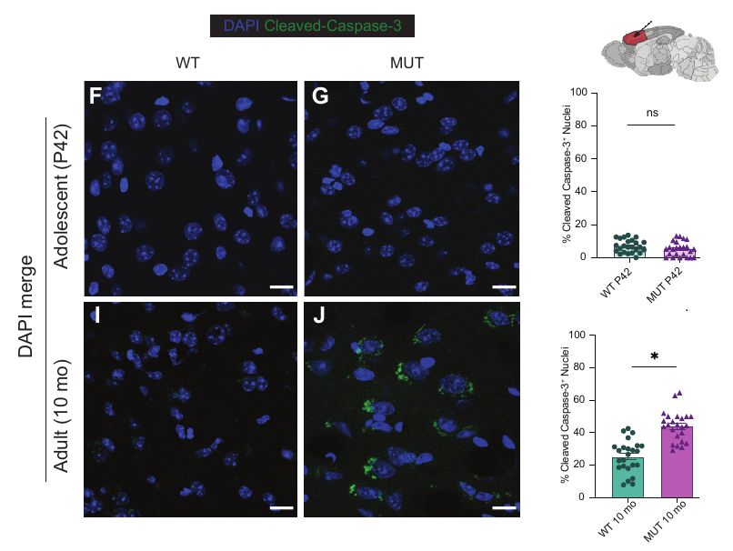Motor Function Decline with Age

WASHC4P1019R mutant mice exhibit motor function decline with age.
Impaired motor behaviors in SWIPP1019R Patient Cohort
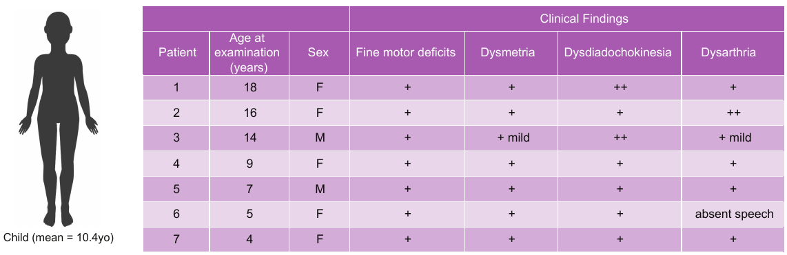Conclusions and Parallels with Neurodegenerative Disorders
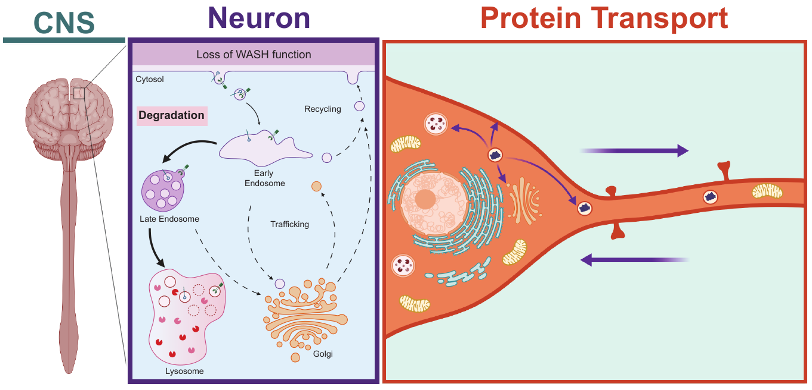Future Directions
Resources for reproducible proteomics research.

Generating high-resolution cellular maps with the Leiden algorithm.
Acknowledgments
- Collaborator: Jamie Courtland
- Thesis Lab: Scott Soderling
- Proteomics Core: Greg Waitt, Tricia Ho, and Erik Soderblom
- Funding: (NIH F31 5F31NS113738-03)
Questions
Extra Slides
Partitioning the Variance
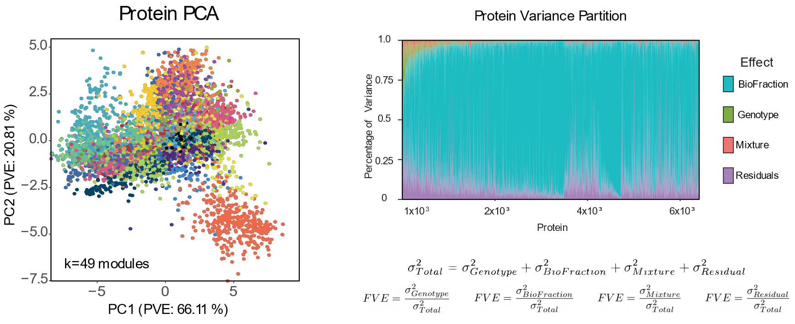Network Enhancement Facilitates Community Detection
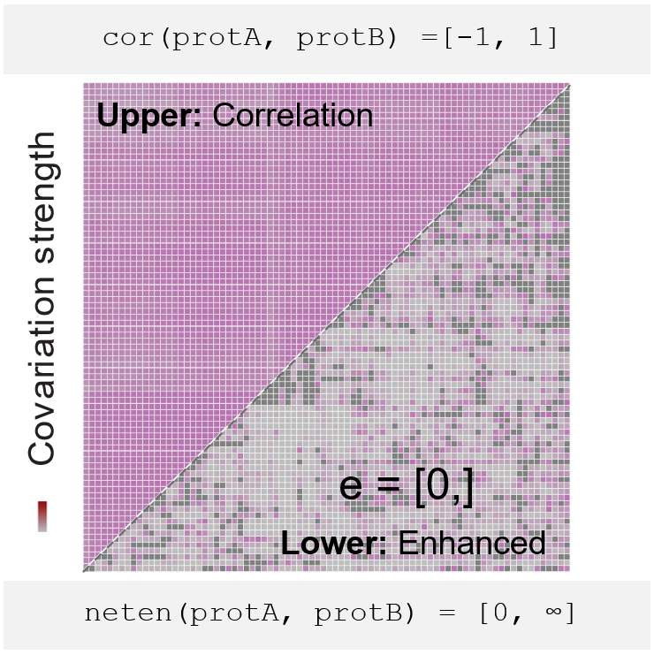Disruption of an ER Stress Associated Module
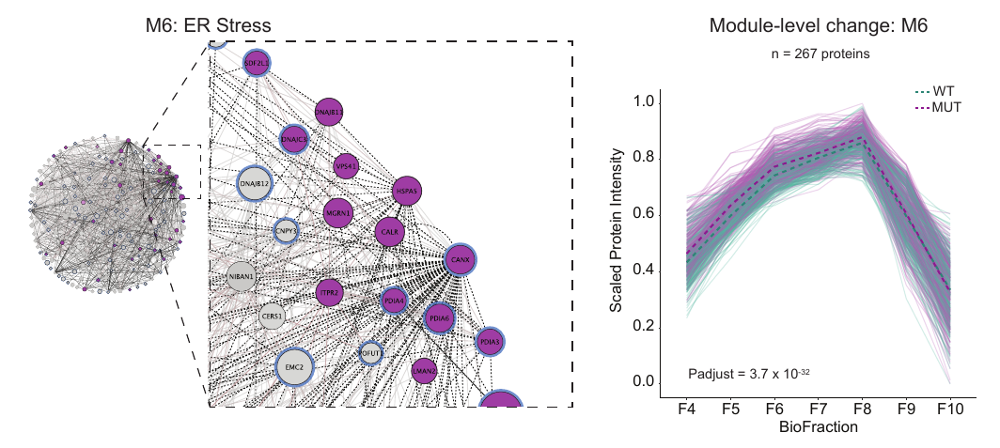Increased ER stress proteins: e.g. HSPA5, PDIA3, PDIA4, PDIA6, and DNAJC3
Compartments with subtle changes in SWIP Mutant Mice
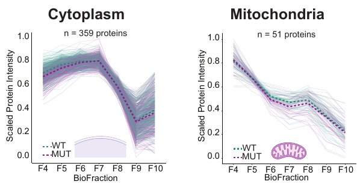Compartments enriched for Geladaki et al., (2019) marker proteins.
Disruption of an Endosomal Module
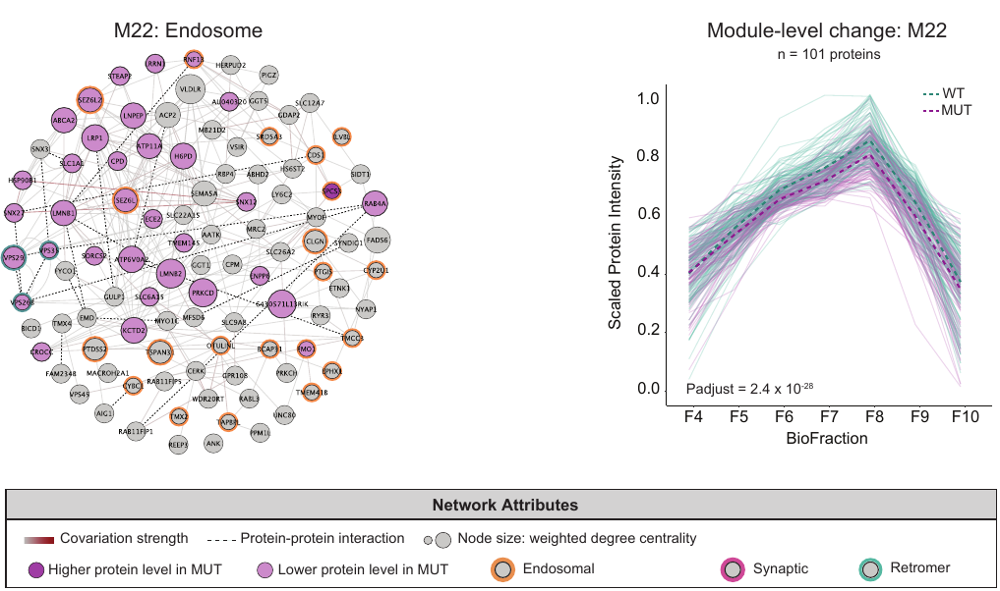Decreased abundance of an Excitatory Postsynapse Module
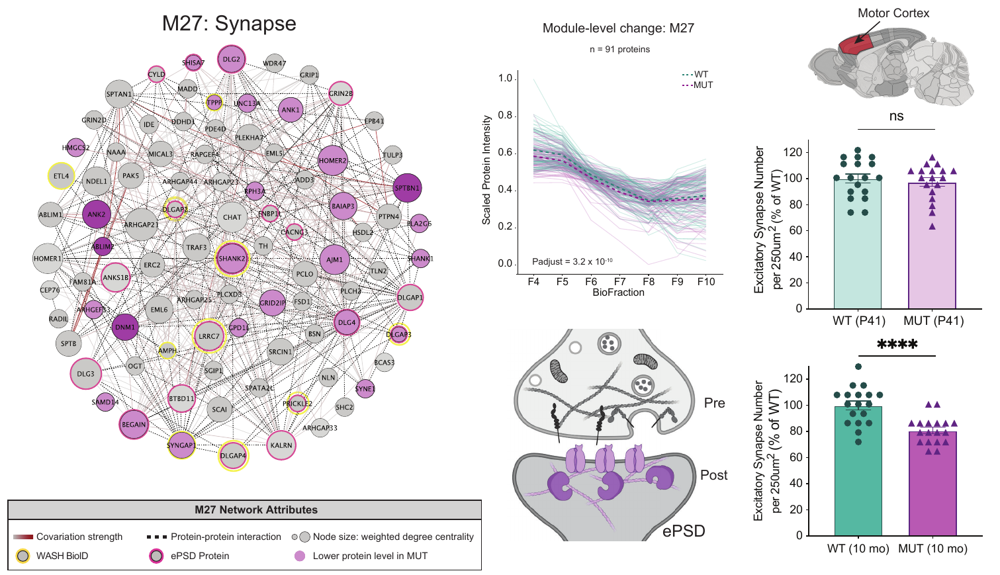Konigsberg Problem
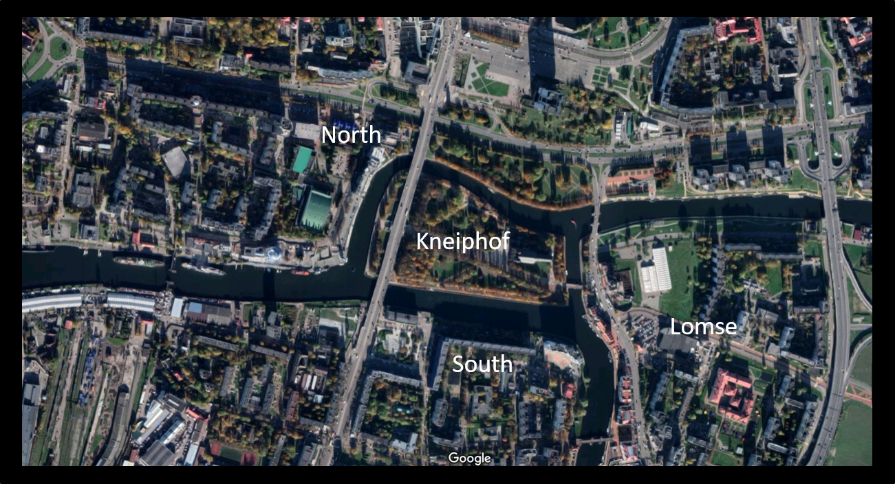A view of the modern city of Kaliningrad, Russia.
Euler 1735: Konigsberg Graph
The Leiden Algorithm
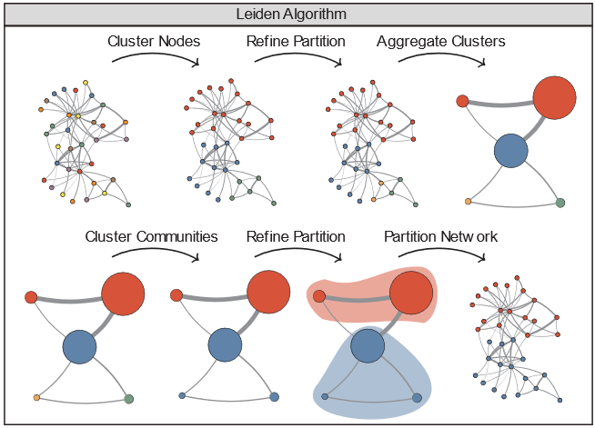Structure in Graphs at Multiple Resolutions


Konigsberg < Kaliningrad < Europe
Permutation testing to identify changes in network topology
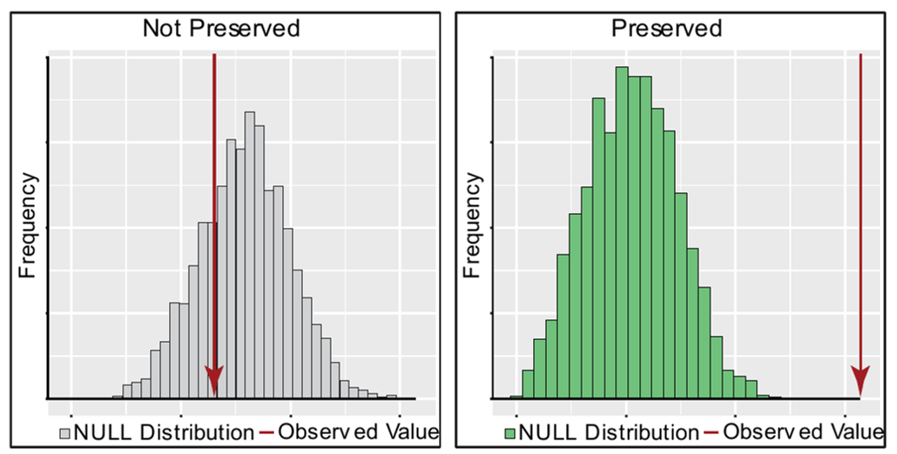Extending Linear Models with Mixed Effects
Goodness-of-fit of the edgeR model for TMT Proteomics

Quantile-Quantile plots evaluating the goodness of fit of the NB model for TMT proteomics data.